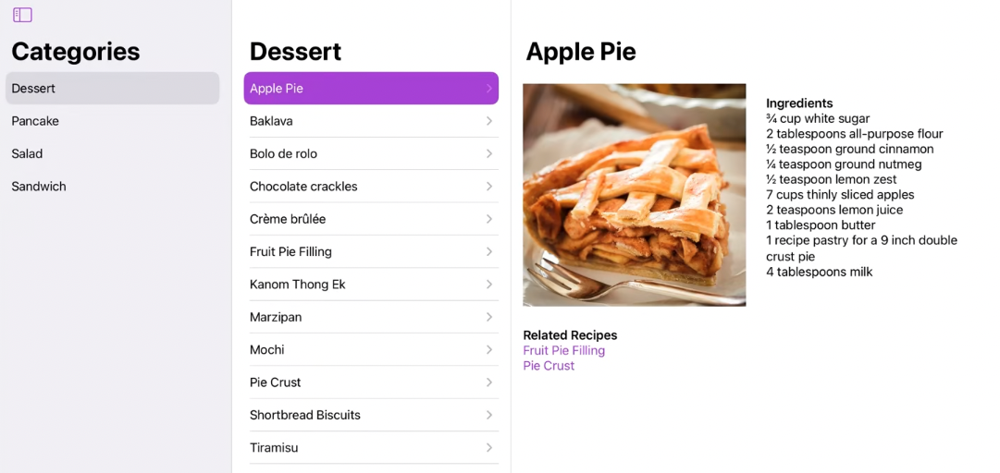

[WWDC22] Navigation Cook book in SwiftUI
WWDC22 - Navigation Cook book in SwiftUI
SwiftUI를 사용하면서 항상 문제가 되는 부분은 Navigation입니다. 이번 iOS16 업데이트에서 딥링크, 프로그래밍적 navigation 등 다양한 장벽들을 해소할 수 있는 새로운 API가 많이 등장했습니다. 개인적으로 iOS 16부터 본격적으로 기존 UIKit을 대체할 수 있을 것으로 생각합니다.
기존에는 어떤 아이템의 상세 정보를 보기 위해서 NavigationLink와 Bool 값인 state property를 사용해야 했습니다.
아래 코드에서 “Details“를 선택하면 showDetail 값이 true로 변경되며 DetailView가 표시됩니다. 프로그래밍적으로 이를 제어하려면 로컬 state property인 showDetail 값을 true로 변경해야 합니다.
만약 DetailView와 같은 특정 조건에 따라 진입해야 하는 다양한 종류의 View가 있다면, 해당 path에 대해 각각의 Bool 값 state property가 필요합니다.
NavigationLink("Details", isActive: $item.showDetail) {
DetailView()
}
새로운 네비게이션 API에서는 전체를 하나의 스택으로 만들 수 있습니다. 이때, path는 UIViewController의 ViewControllers 배열처럼 각각의 path 값을 스택으로 가지고 있기 때문에 훨씬 직관적이고 프로그램적으로 컨트롤하기 쉬워졌습니다.
덕분에 SwiftUI Navigation에서 가장 큰 걸림돌인 deep link나 pot to root 같은 것들을 쉽게 프로그램적으로 컨트롤할 수 있습니다.
NavigationStack(path: $path) {
NavigationLink("Details", value: value)
}
이번 포스트에서 분석할 화면은 아래와 같습니다. 화면의 좌측부터 아이템을 선택하면 우측으로 심층적으로 내려가도록 되어 있습니다. NavigationSplitView에서는 좌측부터 Sidebar, content, detail이라고 부릅니다.

New Navigation APIs
다음 파트에서 자세한 설명을 다룰 부분은 있지만, 여기서는 새롭게 추가된 내용만 간략히 살펴보겠습니다.
1. NavigationStack
NavigationStack은 워치, 아이폰 등에서 볼 수 있는 푸시 스타일을 제공합니다. 앞서 보여준 것과 같이 path 배열을 추가하여 프로그래밍적으로 컨트롤할 수 있습니다.
@State private var path: [Value] = []
...
NavigationStack(path: $path) {
NavigationLink("Details", value: value)
}
2. NavigationSplitView
NavigationSplitView를 사용하면 메일, 할 일 목록 등 다중 열 화면을 만들 수 있습니다. 각 열의 너비나 사이드 바와 같은 세부 조정이 가능합니다. 이번 포스트에서는 Navigation 컨테이너를 중요하게 다룰 예정입니다.
NavigationSplitView {
RecipeCategories()
} content: {
RecipeList()
} detail: {
RecipeDetail()
}
자세한 설명은 WWDC22 “SwiftUI on iPad: Organize your interface” 동영상에서 확인할 수 있습니다.
3. NavigationLink
기존 NavigationLink는 타이틀과 해당 네비게이션의 액션으로 노출할 View로 구성되어 있었습니다. 그러나 변경된 구조에서는 View가 제거되고 타이틀과 Value만 남게 되었습니다.
그러면 NavigationLink를 선택했을 때 이동할 destination View는 어디에 있을까요? NavigationLink가 아닌 navigationDestination modifier를 통해 구현하게 됩니다. 이에 대해서는 아래에서 자세히 설명하겠습니다.
아래 예시에서 NavigationLink에 해당하는 Value는 "applePieRecipe"입니다. 헤딩 아이템을 선택하면 "applePieRecipe"의 세부 화면으로 이동하게 됩니다.
NavigationLink("Show detail") {
DetailView()
}
NavigationLink("Apple Pie", value: applePieRecipe)
Recipes for navigation
NavigationStack
위에서 소개된 새로운 API들을 이용하여 실제 레시피 네비게이션을 하는 방법에 대해 살펴보겠습니다.
가장 먼저 할 일은 iOS 앱이나 워치에서 많이 사용하는 NavigationStack을 통한 push 네비게이션을 살펴보는 것입니다.
기존의 SwiftUI NavigationLink를 기반으로 작성하면 아래와 같습니다. 타이틀과 destination View의 링크를 설정합니다. 이 방법으로도 충분히 원하는 효과를 낼 수 있습니다.
사용자의 터치 액션 뿐만 아니라 푸시, 타이머, 에러 등 다양한 이벤트에 대해 필요한 화면을 사용자에게 표시해야 합니다. 그러나 현재 이 방법으로는 프로그래밍적으로 해당 네비게이션을 제어하는 방법이 없습니다.
NavigationLink(recipe.name) {
RecipeDetail(recipe: recipe)
}
프로그래밍적으로 NavigationLink를 사용하기 위해서는 해당 액션을 두 가지로 분리해야 합니다.
- 해당 액션을 상징하는 값 (Path Value)
- 그 값에 해당하는 뷰 (Destination View)
이 두 가지를 준비하고 나면, NavigationLink를 생성하는 코드를 작성할 수 있습니다.
먼저 해당 네비게이션의 Destination을 설정합니다. 이 때 Value의 타입을 Recipe.self 타입으로 설정하여 해당 NavigationLink 이벤트가 발생할 때 데이터를 전달할 수 있습니다.
따라서, 타입이 각각 다른 복수의 NavigationLink를 사용하더라도, 그에 매칭되는 NavigationDestination을 다수 추가한다면, 다양한 네비게이션을 구현할 수 있습니다.
.navigationDestination(for: Recipe.self) { recipe in
RecipeDetail(recipe: recipe)
}
이제 새롭게 추가된 NavigationLink의 value를 사용하여 아래와 같은 방식으로 NavigationLink 이벤트를 발생시키면 해당 타입의 navigationDestination으로 이동합니다.
NavigationLink(recipe.name, value: recipe)
NavigationStack, Path, navigationDestination의 관계를 아래와 같이 살펴보면, NavigationLink가 발생하면 path에 value가 추가됩니다. 그러면 이 value에 해당하는 navigationDestination이 View를 만들어 pushed views에 추가됩니다.

실제로 구현한다면, 레시피 배열을 NavigationStack의 경로로 사용할 수 있습니다.
@State private var path: [Recipe] = []
View를 1:1로 매칭하는 path를 가지고 있기 때문에 프로그램적으로 path를 추가하거나 빼는 것이 가능합니다. 흥미로운 점은, 이렇게 프로그램적으로 path에 item을 추가해도 push나 pop 되는 애니메이션이 발생하기 때문에 자연스럽게 추가하거나 제거할 수 있다는 것입니다.
func showRecipeOfTheDay() {
path = [dataModel.recipeOfTheDay]
}
func popToRoot() {
path.removeAll()
}
이러한 push 형태의 NavigationStack은 아이패드, 맥, 아이폰, 워치 등 모든 애플 기기에서 잘 동작합니다. NavigationStack에 대해 자세히 알아보고 싶다면, WWDC22 Build a productivity app for Apple Watch 영상에서 확인할 수 있습니다.
NavigationSplitView
NavigationSplitView는 이미지와 같이 최대 3단까지 계층형으로 View를 노출할 수 있는 컨테이너입니다. 이 컨테이너는 아이패드와 macOS 같은 환경에서 많이 사용됩니다. 아이폰과 애플워치에서는 자동으로 stack 형태로 노출되므로 매우 유용하게 사용할 수 있습니다. 아래 화면도 NavigationSplitView + NavigationLink + List로 구성되어 있습니다.

먼저 왼쪽의 Categories를 구현하기 위해 다음과 같이 작성합니다. NavigationStack에서 NavigationLink에 값을 적용하는 방법을 앞서 살펴보았습니다. 이번에도 value 값을 적용하는데, NavigationStack에서는 value 값을 path: [Recipe]에 저장했지만, 이번에는 List에서 selection을 사용하여 @State 변수에 저장하도록 했습니다.
이번 업데이트에서는 List를 활용할 수 있는 다양한 방법들이 추가되었습니다. 자세한 내용은 WWDC22 SwiftUI on iPad: Organize your interface 영상에서 확인할 수 있습니다.
@State private var selectedCategory: Category?
...
NavigationSplitView {
List(Category.allCases, selection: $selectedCategory) { category in
NavigationLink(category.localizedName, value: category)
}
.navigationTitle("Categories")
} content: {
...
} detail: {
...
}
다음으로, 중간 content UI를 만들어야 합니다. 앞선 내용의 반복입니다. 이 부분에서도 앞서 selectedCategory 값을 알기 때문에, 해당하는 Recipe 배열을 dataModel에서 가져와서 List를 구성하도록 합니다. 이번에도 NavigationLink의 selection value를 selectedRecipe라는 지역 변수에 저장하도록 합니다.
selectedCategory는 @State property로 선언되어 있으며 해당 View의 컨텍스트 내부에 있습니다. 따라서 @State property가 변경되면 body를 새로 만들게 되고 NavigationSplitView의 content 부분도 재 호출되어 List가 다시 그려지게 됩니다.
동일한 원리로 content 내부의 리스트에서 아이템을 선택하여 selectedRecipe가 변경되면, body가 다시 그려집니다.
@State private var selectedCategory: Category?
@State private var selectedRecipe: Recipe?
...
NavigationSplitView {
...
} content: {
List(dataModel.recipes(in: selectedCategory), selection: $selectedRecipe) { recipe in
NavigationLink(recipe.name, value: recipe)
}
.navigationTitle(selectedCategory?.localizedName ?? "Recipes")
} detail: {
...
}
마지막으로, Recipe에 대한 Detail을 업데이트하기 위해 RecipeDetail을 업데이트합니다.
NavigationSplitView {
...
} content: {
...
} detail: {
RecipeDetail(recipe: selectedRecipe)
}
만약 이 부분을 프로그래밍적으로 수정하고 싶다면 어떻게 해야 할까요? NavigationStack에서는 로컬 변수 path를 조작하여 해당 네비게이션을 프로그래밍적으로 수정할 수 있었습니다. NavigationSplitView도 로컬 변수 selectedCategory와 selectedRecipe를 사용하고 있으므로, 아래와 같이 직접 데이터를 적용하면 동일한 애니메이션과 함께 UI 업데이트를 수행할 수 있습니다.
func showRecipeOfTheDat() {
let recipe = dataModel.recipeOfTheDay
selectedCategory = recipe.category
selectedRecipe = recipe
}
NavigationSplitView + NavigationStack
조금 더 복잡한 화면을 구현해 보겠습니다. 이번에는 두 개의 열로 구성되며, 아이템을 누르면 전체 세부 정보가 표시되는 View가 Push 되는 경우입니다. 이번 화면 구현에서는 이전에 소개된 모든 View를 사용하여 만들 수 있으며, 다음과 같은 View가 사용됩니다.
NavigationSplitViewNavigationStackNavigationLinknvigationDestination(for:)List

좌측 Categories는 앞서 설명한 것과 동일하기 때문에 코드만 첨부하고 넘어갑니다. 이전 부분과 다른 점은 이번에는 content가 없기 때문에 NavigationSplitView에서 Sidebar와 detail만 구현합니다.
이전에 살펴본 것과 마찬가지로, path를 만들어서 추가합니다. 이렇게 하면 NavigationSplitView 전체에 프로그래밍 방식으로 네비게이션을 구현할 수 있습니다.
이번에 detail 부분에서는 그리드 화면을 만들어야 하기 때문에 코드 양이 좀 많습니다. 따라서 별도의 RecipeGrid 뷰를 만들어서 자세히 살펴보겠습니다.
@State private var selectedCategory: Category?
@State private var path: [Recipe] = []
...
NavigationSplitView {
List(Category.allCases, selection: $selectedCategory) { category in
NavigationLink(category.localizedName, value: category)
}
.navigationTitle("Categories")
} detail: {
NavigationStack(path: $path) {
RecipeGrid(category: selectedCategory)
}
}
아래 코드를 보면, LazyVGrid를 사용하여 RecipeTile을 표시하고 있습니다. UI를 만드는 데 특별한 것은 없는 일반적인 LazyVGrid UI입니다. NavigationLink에서 recipe를 value로 동일하게 설정했습니다. 그렇다면, navigationDestination은 어디에서 선언해주어야 할까요?
var category: Category?
var body: some View {
if let category = category {
ScrollView {
LazyVGrid(columns: columns) {
ForEach(dataModel.recipes(in: category)) { recipe in
NavigationLink(value: recipe) {
RecipeTile(recipe: recipe)
}
.buttonStyle(.plain)
}
}
.padding()
}
}
}
만약, navigationDestination을 각각의 아이템에 붙여주게 되면 ForEach가 반복될 때마다 해당 코드가 실행됩니다. 그러므로 스크롤 위치와 상관없이 가장 바깥에 있는 ScrollView에 붙여주시면 됩니다.
ScrollView {
...
}
.navigationTitle(category.localizedName)
.navigationDestination(for: Recipe.self) { recipe in
RecipeDetail(recipe: recipe)
}
Persistent state
이제 네비게이션 상태를 유지하는 방법에 대해 살펴보겠습니다.
앱에서 네비게이션 상태를 유지하려면 다음 두 가지 구성 요소가 필요합니다. 이 중 SceneStorage은 iOS 14에서 추가된 새로운 개념입니다.
CodableSceneStorage
작업은 이번에 3단계로 진행됩니다.
- Move navigation state into a model type
- 현재 네비게이션 상태를 모델로 만들어 저장하고, 꺼내올 수 있도록 하는 기능을 추가합니다.
- Make the navigation model codable
- Use SceneStorage to save and restore
1. Move navigation state into a model type
앞서 만든 네비게이션 코드를 살펴보겠습니다. selectedCategory는 좌측 사이드바에서 선택한 아이템을 저장하고 있습니다. 또한 path에서는 detail 영역이 NavigationStack에 어떤 아이템이 push되어 있는지 저장하고 있습니다.
위 2가지 정보만 알고 있다면 프로그래밍적으로 navigation state를 복원할 수 있습니다.
@State private var selectedCategory: Category?
@State private var path: [Recipe] = []
...
NavigationSplitView {
List(Category.allCases, selection: $selectedCategory) { category in
NavigationLink(category.localizedName, value: category)
}
.navigationTitle("Categories")
} detail: {
NavigationStack(path: $path) {
RecipeGrid(category: selectedCategory)
}
}
2개의 정보를 클래스로 만들어 보겠습니다. 그리고 해당 모델을 인스턴스화 하여 교체하겠습니다.
class NavigationModel: ObservableObject {
@Published var selectedCategory: Category?
@Published var path: [Recipe] = []
}
@StateObject private var navModel = NavigationModel()
...
NavigationSplitView {
List(Category.allCases, selection: $navModel.selectedCategory) { category in
NavigationLink(category.localizedName, value: category)
}
.navigationTitle("Categories")
} detail: {
NavigationStack(path: $navModel.path) {
RecipeGrid(category: navModel.selectedCategory)
}
}
2. Make the navigation model codable
이제 이전에 만든 NavigationModel을 Codable로 만들어 봅시다. 대부분의 경우 Codable만 추가하면 자동으로 encodable, decodable 하게 만들어집니다. 그러나 이번 경우에는 세 가지 이유로 커스텀하게 만들어야 합니다.
- Don’t store entire model value
- Recipe 모델의 모든 데이터를 저장할 필요가 없습니다.
- Repeated information
- 로컬 DB에 이미 레시피 정보가 있으므로, 고유한 값인 identifier만 있으면 언제든지 해당 레시피를 다시 복원할 수 있습니다.
- Can change independently
- 만약 로컬 DB에 저장된 Recipe 값이 업데이트 된 경우, 현재 저장된 정보는 구식 정보가 됩니다.
먼저 아래와 같이 CodingKeys를 추가합니다. selectedCategory는 동일하지만, path의 경우 recipePathIds로 이름을 지었습니다. 이는 앞서 설명한 것과 마찬가지로 path의 ID 값만 저장할 계획이기 때문입니다.
class NavigationModel: ObservableObject, Codable {
@Published var selectedCategory: Category?
@Published var path: [Recipe] = []
enum CodingKeys: String, CodingKey {
case selectedCategory
case recipePathIds
}
}
아래와 같이 인코딩 방법을 사용하여 저장합니다. 이 때, encodeIfPresent는 selectedCategory 값이 nil이 아닐 경우에만 값을 저장합니다. path의 ID들은 배열로 저장됩니다.
func encode(to encoder: Encoder) throws {
var container = encoder.container(keyedBy: CodingKeys.self)
try container.encodeIfPresent(selectedCategory, forKey: .selectedCategory)
try container.encode(recipePath.map(\.id), forKey: .recipePathIds)
}
저장하는 데이터는 다음과 같이 JSON으로 표현할 수 있습니다.
{
"selectedCategory": 0,
"recipePathIds": [
"DD742F51-....",
"F1F67850-....."
]
}
마지막으로 init 함수를 작성합니다. init 함수에서는 decoder를 통해 저장된 정보가 있다면 복원해 초기 navigation state 값을 설정합니다.
특이한 부분은 recipe의 id 값들을 decoding 한 이후에 DataModel에서 일치하는 아이템들을 꺼내주도록 하는 것입니다.
required init(from decoder: Decoder) throws {
let container = try decoder.container(keyedBy: CodingKeys.self)
self.selectedCategory = try container.decodeIfPresent(
Category.self, forKey: .selectedCategory)
let recipePathIds = try container.decode(
[Recipe.ID].self, forKey: .recipePathIds)
self.recipePath = recipePathIds.compactMap { DataModel.shared[$0] }
}
마지막으로 jsonData를 외부에서 쉽게 읽고 쓸 수 있도록 인터페이스를 추가합니다.
var jsonData: Data? {
get { try? encoder.encode(self) }
set {
guard let data = newValue,
let model = try? decoder.decode(Self.self, from: data)
else { return }
selectedCategory = model.selectedCategory
recipePath = model.recipePath
}
}
3. Use SceneStorage to save and restore
이제 해당 데이터를 JSON으로 만들어 읽고 쓸 수 있게 되었으니, 실제로 저장해야 합니다. 이 때 SceneStorage를 사용해 보겠습니다.
SceneStorage는 관련 값을 자동으로 저장하고 불러옵니다. 만약 해당 화면에 최초로 진입한 경우, data 값은 nil이 될 것입니다. 시스템이 Scene을 복원하면, SceneStorage 값 역시 복구됩니다.
값을 저장하기 위해서는, View 단에 .task modifier를 추가해야 합니다.
task modifier는 비동기적으로 해당 View가 생성되면 등록되고, View가 사라지면 취소됩니다.
따라서 아래의 코드는 내 뷰가 나타나면 data를 꺼내서 navModel에 비동기적으로 추가하고, navModel의 값이 변경될 때마다 objectWillChangeSequence가 호출되어 비동기적으로 data를 업데이트합니다.
@StateObject private var navModel = NavigationModel()
@SceneStorage("navigation") private var data: Data?
var body: some View {
NavigationSplitView {...}
.task {
if let jsonData = data {
navModel.jsonData = jsonData
}
for await _ in navModel.objectWillChangeSequence {
data = navigationModel.jsonData
}
}
}
Navigation Tips
SwiftUI의 네비게이션 컨테이너에 대해 알아보았는데, 마지막으로 몇 가지 팁을 알려드리겠습니다.
- 가능하면 빨리 새로운
NavigationStack,NavigationSplitView로 전환하세요.NavigationView.stack→NavigationStackNavigationView→NavigationSplitViewNavigationLink.isActive, tag, selection→NavigationLink.value- 자세한 마이그레이션 방법은 Migrating to new navigation types 문서를 확인하세요.
List를NavigationStack,NavigationSplitView와 함께 사용할 수 있다는 것을 기억하세요.navigationDestination modifier를 접근하기 쉬운 곳에 두세요.- Navigation 구조를 이해했다면
NavigationSplitView부터 시작하세요.- 작은 화면에서는 자동으로 stack으로 변경되기 때문에 아이폰, 애플 워치 등에서 유용합니다.